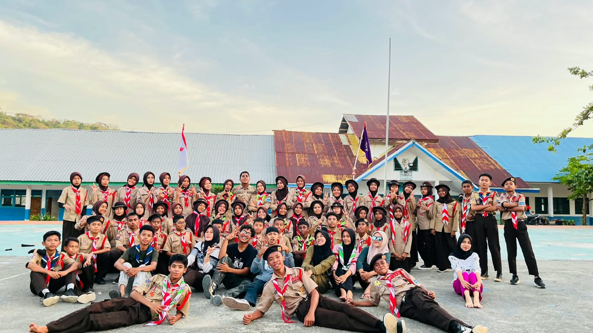

Beranda (Konverter) Kamus & Materi Buku Tamu
Lord Baden-Powell Robert Stephenson Smyth Baden-Powell (lebih dikenal sebagai Baden-Powell atau BP) adalah Bapak Pramuka Sedunia. Ia lahir di London pada 22 Februari 1857 dan wafat di Nyeri, Kenya pada 8 Januari 1941. Berkat pengalaman militer dan kecintaannya pada alam, ia berhasil mendirikan Gerakan Kepanduan (Scouting) yang kini diikuti oleh jutaan anak muda di seluruh dunia.
Gerakan Pramuka Gerakan Pramuka di Indonesia berperan besar dalam membentuk karakter pemuda yang mandiri, disiplin, dan cinta tanah air. Sebagai wadah pendidikan nonformal, gerakan ini melatih generasi muda melalui kegiatan luar ruangan yang menyenangkan dan sarat akan nilai-nilai pembentukan kepribadian yang tangguh. Tri Satya Tiga janji utama yang menjadi komitmen moral setiap anggota terhadap Tuhan, Negara Kesatuan Republik Indonesia (NKRI), pancasila, dan sesama manusia. dan Dasa Darma Tiga janji utama yang menjadi komitmen moral setiap anggota terhadap Tuhan, Negara Kesatuan Republik Indonesia (NKRI), pancasila, dan sesama manusia.
Sandi dan isyarat seperti Morse dan Semaphore merupakan sarana komunikasi penting dalam kepanduan untuk melatih ketangkasan berpikir dan koordinasi kelompok.

Situs ini membantu Anda mempelajari dan mengonversi teks biasa menjadi Sandi Morse secara instan.
Cukup ketik teks di kolom bawah, dan hasilnya akan otomatis muncul.
Masukkan Teks / Kalimat / Morse :
Hasil Sandi Morse / Kalimat / Teks :
⚜️ Mari Lestarikan Sandi-Sandi Pramuka! ⚜️
© 2026 Bin Bin punya
Dibuat dengan Semangat Kepanduan | Pelajari Lebih Lanjut